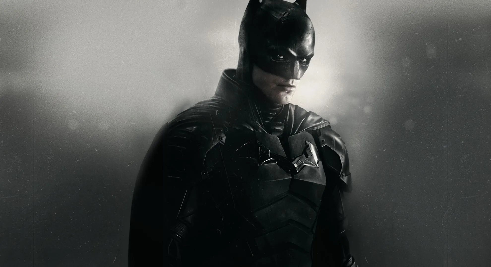
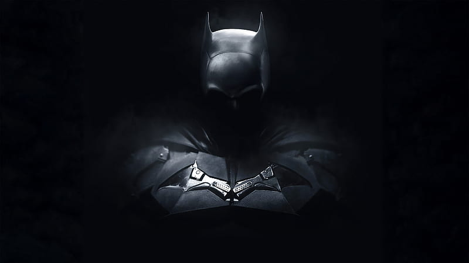
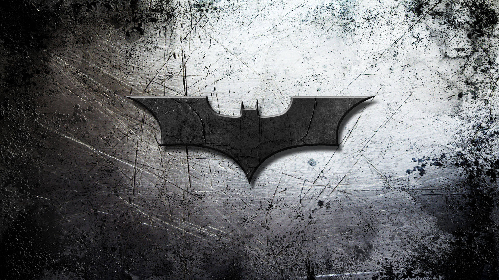

Podczas Halloween burmistrz Gotham City Don Mitchell Jr. zostaje zamordowany przez seryjnego mordercę zwanego Riddler (Riddler). Miliarder Bruce Wayne, od dwóch lat działający jako Batman, prowadzi śledztwo wraz z Departamentem Policji Gotham City (GCPD). Porucznik James Gordon odkrywa, że Riddler zostawił wiadomość dla Batmana, ale komisarz Pete Savage gani go za wpuszczenie mściciela na miejsce zbrodni i zmusza Batmana do odejścia. Riddler zabija Savage’a i zostawia kolejną wiadomość dla Batmana[2][3][4][5]. Batman i Gordon odkrywają, że Riddler zostawił w samochodzie Mitchella pendrive zawierający zdjęcia burmistrza Anniką w Iceberg Lounge, klubie nocnym prowadzonym przez Pingwina. Batman przepytuje go, a on twierdzi, że nichs nie wie. Wayne zauważa, że Selina Kyle, współlokatorka i dziewczyna Anniki, pracuje tam jako kelnerka, więc zaczyna z nią współpracować. Po porwaniu Anniki Batman wysyła Selinę z powrotem do Iceberg Lounge, by poszukała wskazówek. Dzięki niej odkrywa, że Savage bierze łapówki od Carmine Falcone’a, podobnie jak prokurator Gil Colson. Selina zrywa kontakt, gdy Batman naciska na nią w sprawie jej związku z Falconem[2][3][4][5]. b Riddler uprowadza Colsona, przyczepia mu do szyi bombę zegarową i wysyła go, by zakłócił pogrzeb Mitchella. Kiedy na miejscu zjawia się Batman, Riddler dzwoni do niego przez telefon Colsona i grozi, że zdetonuje bombę jeśli Colson nie rozwiąże trzech zagadek. Batman pomaga Colsonowi odpowiedzieć na dwie pierwsze, ale Colson odmawia udzielenia odpowiedzi na trzecią – imię informatora, który przekazał GCPD informacje doprowadzające do akcji antynarkotykowej która przeszła do historii, a w której zginął Sal Maroni – przez co umiera. Batman i Gordon dochodzą do wniosku, że informatorem może być Pingwin i go namierzają. Odkrywają, że operacja Maroniego nigdy nie została zakończona, a w sprawę zamieszanych jest wielu funkcjonariuszy GCPD. Selina nieumyślnie ich demaskuje, gdy zjawia się na miejscu ukraść pieniądze. Gdy Pingwin ucieka, Selina odkrywa w bagażniku samochodu zwłoki Anniki. Batman pojmuje Pingwina, ale dowiaduje się, że to nie on był informatorem[2][3][4][5]. Batman i Gordon podążają tropem Riddlera do ruin sierocińca, prowadzonego niegdyś przez rodziców Bruce’a, Thomasa i Marthę. Dowiadują się, że Riddler był mieszkańcem tego sierocińca i żywi urazę do rodziny Wayne’ów. Lokaj i opiekun Bruce’a, Alfred Pennyworth, trafia do szpitala po tym, jak otwiera list będący bombą, zaadresowany do Bruce’a. Riddler ujawnia dowody na to, że ojciec Bruce’a, który startował w wyborach na burmistrza, wynajął Falcone’a, by ten zabił dziennikarza grożącego ujawnieniem kompromitujących szczegółów na temat choroby psychicznej Marthy. Bruce, który dorastał w przekonaniu, że jego ojciec był moralnie uczciwy, rozmawia z Alfredem, który potwierdza zarzuty. Mówi też, że zdecydował się wydać Falcone’a w ręce policji po tym, jak dowiedział się o morderstwie oraz że przypuszcza, iż Falcone kazał zabić Thomasa i Marthę, aby temu zapobiec[2][3][4][5]. Selina przyznaje się Batmanowi, że Falcone jest jej ojcem. Dowiaduje się, że Annika została uduszona, ponieważ Mitchell powiedział jej, że Falcone był informatorem. Z tego powodu postanawia go zabić. Batman i Gordon przybywają do Iceberg Lounge i powstrzymują ją, ale Falcone’a zabija Riddler. Zdemaskowany jako księgowy Edward Nashton, Riddler zostaje osadzony w więzieniu Arkham. Nashton mówi, że zazdrościł Bruce’owi współczucia, które otaczało go po zabójstwie rodziców, podczas gdy on był ignorowany. Uwielbia Batmana, który zainspirował go do zajęcia się skorumpowanymi i proponuje mu współpracę, ale Batman gniewnie ją odrzuca. Przeszukując jego mieszkanie Wayne odkrywa, że Nashton rozmieścił w Gotham samochody z bombami i stworzył grupę zwolenników w Internecie, którzy planują zamordować burmistrz Bellę Reál[2][3][4][5]. Bomby wybuchają i niszczą falochrony wokół Gotham, przez co miasto zostaje zalane. Mieszkańcy uciekają do krytej hali sportowej, gdzie zwolennicy Nashtona strzelają do Reál, ale zostają powstrzymani przez Batmana i Selinę. Po powodzi Nashton zaprzyjaźnia się z innym więźniem (który okazuje się być Jokerem), natomiast Selina uznaje, że Gotham nie da się już uratować i odchodzi. Batman pomaga w odbudowie miasta i obiecuje go bronić[2][3][4][5]. 
W sierpniu 2013 Ben Affleck został obsadzony w roli Bruce’a Wayne’a / Batmana w DC Extended Universe[29]. Zadebiutował w filmie Batman v Superman: Świt sprawiedliwości w 2016, a następnie pojawił się w Suicide Squad (2016) i Lidze Sprawiedliwości (2017)[30][31][32]. W październiku 2014 Warner Bros. ujawnił plany dotyczące solowego filmu o Batmanie z Affleckiem w roli głównej, który był także w trakcie negocjacji dotyczących reżyserii i współtworzenia scenariusza[33][34][35]. Produkcja miała rozpocząć się gdy Affleck zakończy pracę nad Nocnym życiem (2016)[34][35]. Affleck i Johns ukończyli pierwszy szkic w marcu 2016[36]. Scenariusz miał opowiadać o wydarzeniach po Batman v Superman i Lidze Sprawiedliwości i być inspirowany komiksami[34]. Affleck porównał klimat filmu do Batman v Superman, a także gry wideo Batman: Arkham Asylum (2009)[37][38]. Robert Richardson, który był zaangażowany w projekt na jego wczesnym etapie potwierdził, że scenariusz był przede wszystkim osadzony w Arkham Asylum[39]. Przedstawiał on Slade’a Wilsona / Deathstroke’a, który chciał uczynić Batmana bezbronnym przed walką z nim na ulicach Gotham[38]. Planowano, że pojawi się Batgirl, która pomoże Batmanowi[40]. Johns powiedział, że film miałby również rozwijać wątek śmierci Robina, która została zasugerowana w Batman v Superman[36]. Dyrektor generalny Warner Bros. Kevin Tsujihara potwierdził podczas CinemaCon w kwietniu 2016, że Affleck wyreżyseruje film[41][42]. W maju Jeremy Irons ujawnił, że ponownie wcieli się w rolę Alfreda Pennywortha z Batman v Superman, a w sierpniu poinformowano o obsadzeniu Joe Manganiello w roli Deathstroke’a[36]. Dodatkowo Jared Leto wyraził zainteresowanie powtórzeniem roli Jokera z Suicide Squad[43]. Zack Snyder nakręcił scenę po napisach do Ligi Sprawiedliwości, która miała przygotować widzów na film o Batmanie[44][45]. Przedstawiała ona Lexa Luthora (Jesse Eisenberg) ujawniającego Deathstroke’owi sekretną tożsamość Batmana[45][44]. W październiku Affleck ujawnił, że film zatytułowany będzie Batman[46]. W grudniu powiedział, że zdjęcia prawdopodobnie rozpoczną się w połowie 2017, a premiera odbędzie się w 2018[46][36]. W tym samym miesiącu planowany sequel Ligi Sprawiedliwości został opóźniony na rzecz Batmana[47]. W tym czasie Chris Terrio został zatrudniony do prac nad scenariuszem[48]. Affleck ogłosił w styczniu 2017, że rezygnuje z funkcji reżysera, aby skupić się na swojej roli[49]. Pozostał jednak producentem filmu[49]. Kilka miesięcy później ujawnił, że powodem rezygnacji było to, że nie był w stanie pokierować scenariusza w sposób, w jaki chciał i czuł, że nadszedł czas, aby ktoś inny „miał na to szansę”[50]. W tym czasie Warner Bros. skupiło się na innych filmach, co sprawiło, że film Afflecka został odsunięty[51]. Scena po napisach w Lidze Sprawiedliwości została zmieniona w postprodukcji, aby zapowiadała grupę Injustice League, która miała się pojawić w sequelu Ligi Sprawiedliwości zamiast roli Deathstroke’a w Batmanie, jednak oryginalna scena została umieszczona w 2021 w Lidze Sprawiedliwości Zacka Snydera[45][44].
Na miejsce Afflecka brano pod uwagę takich reżyserów, jak Matt Reeves, Matt Ross, Ridley Scott, Gavin O’Connor, George Miller, Denis Villeneuve i Fede Álvarez[52][53][48]. 10 lutego 2017 poinformowano, że Reeves rozpoczął negocjacje z Warner Bros., a 23 lutego ogłoszono go jako nowego reżysera[52][54][55]. Miał on również wyprodukować film wraz z Dylanem Clarkiem[56]. Warner Bros. wysłało Reevesowi kopię scenariusza Afflecka, ale on stwierdził, że nie jest to film, który chce zrobić[57]. Ze względu na pracę Reevesa nad Wojną o planetę małp (2017), studio Warner Bros. zgodziło się opóźnić produkcję do czasu, aż reżyser będzie dostępny[57]. Reeves rozpoczął pracę nad scenariuszem w marcu 2017[58]. Początkowo planował zachować powiązania Batmana z DCEU i konsultował się z Affleckiem, ale ostatecznie przerobił historię tak, aby skupić się na wcześniejszej historii Batmana[59][60][61]. Reeves chciał, aby Batman spotkał inne postaci z komiksów, co przyczyniło się do wprowadzenia do filmu m.in. Catwoman, Penguina i Carmine’a Falcone’a[57]. Reżyser zdradził, że ponownie przeczytał swoje ulubione komiksy o Batmanie, ale nie oparł filmu na żadnym z nich[59]. Komiksy, którymi się inspirował to „Year One” (1987) Franka Millera i Davida Mazzucchelli, „The Long Halloween” (1996-97) Jepha Loeba i Tima Sale’a, „Ego” (2000) Darwyna Cooke’a oraz „Zero Year” (2013-14) Scotta Snydera i Grega Capullo[62][63]. Reeves chciał odejść od spojrzenia na Bruce’a Wayne’a jako playboya[64]. W przeciwieństwie do poprzednich filmów o Batmanie, produkcja skupia się na jego umiejętnościach detektywistycznych[21][59]. Do tytułowej roli chciał obsadzić młodszego od Afflecka aktora[61]. W sierpniu 2018 Ben Affleck trafił na odwyk z powodu nadużywania alkoholu i uznano, że po tym incydencie mało prawdopodobne jest, aby ponownie zagrał swoją rolę w filmie[61]. Na panelu Television Critics Association w sierpniu 2018, Reeves powiedział, że scenariusz jest prawie ukończony[59]. Miał nadzieję, że ukończy go w ciągu kilku tygodni i rozpocznie produkcję w pierwszej połowie 2019[65][59]. Reeves złożył swój pierwszy szkic do Warner Bros. w następnym miesiącu[66]. Mattson Tomlin i Peter Craig również przyczynili się do powstania scenariusza, jednak w napisach wymieniono tylko Reeves’a i Craiga[67]. Matt Reeves pierwotnie chciał, aby produkcja była osadzona w DCEU[59]. W sierpniu 2017 Reeves ujawnił, że film będzie połączony z szerszym uniwersum, ale stworzy samodzielną historię[68]. Ostatecznie stwierdził, że połączenie filmu z DCEU odciągnie uwagę od postaci Batmana i poprosił Warner Bros. o swobodę twórczą i możliwość opowiedzenia historii spoza uniwersum[69]. Wyłączenie przez Warner Bros. multiwersum świata DC pozwoliło Reevesowi obrać własny kierunek projektu, co oficjalnie potwierdził prezes DC Films, Walter Hamada[70][69]. Akcja rozgrywa się w oddzielnym świecie, znanym jako „Ziemia-2”[71][70].
